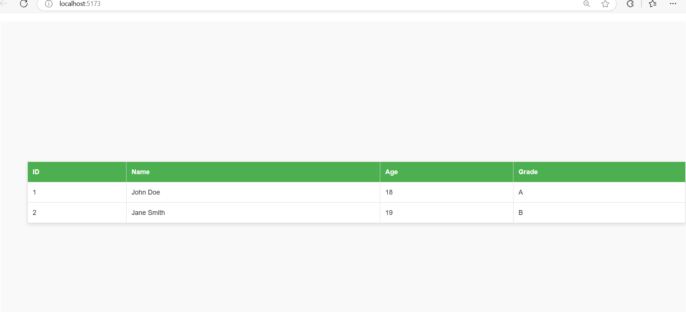
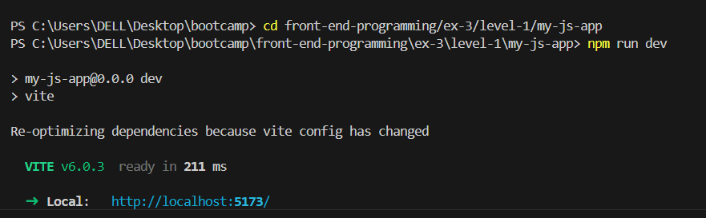
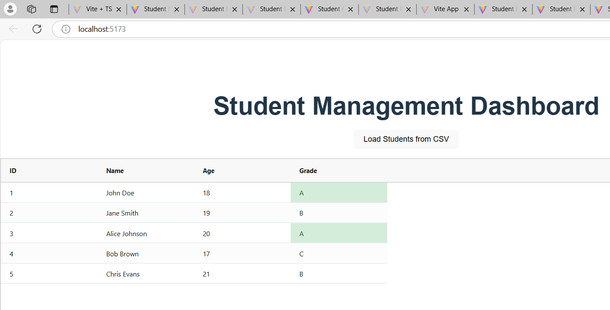
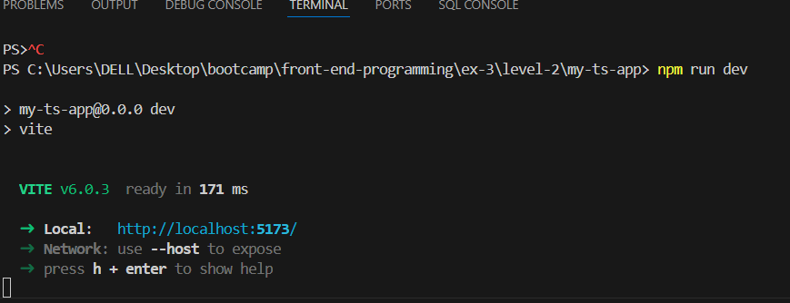
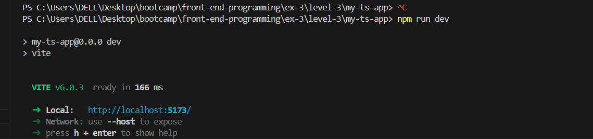
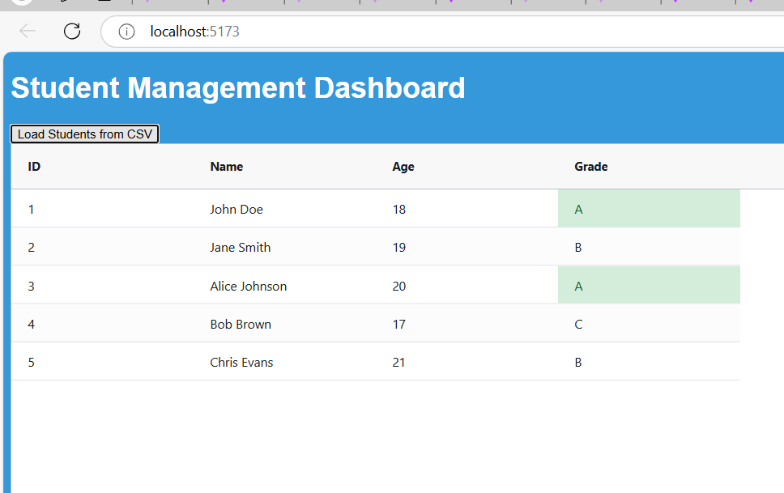

The exercise involved using Vite to scaffold, configure, and build projects with modern tools. The first task was to initialize a Vite project using the JavaScript template, then rebuild the student management dashboard from Exercise 1. The second task was to enhance the dashboard using the TypeScript template, fetching data from a CSV file, parsing it with PapaParse, and displaying it with AG Grid. The code was modularized for data loading, parsing, and rendering.
The final part involved defining CSS classes with specific margin sizes, and using SCSS with loops for the same purpose. Vite’s support for SCSS was explored during this step.
There were not many challenges as previous experience helped with setting up Vite. However, I faced some confusion when implementing AG Grid within Vite.
Yes, LLM was used.
Here is the linkLevel-1
 Level-2
 Level-3
 